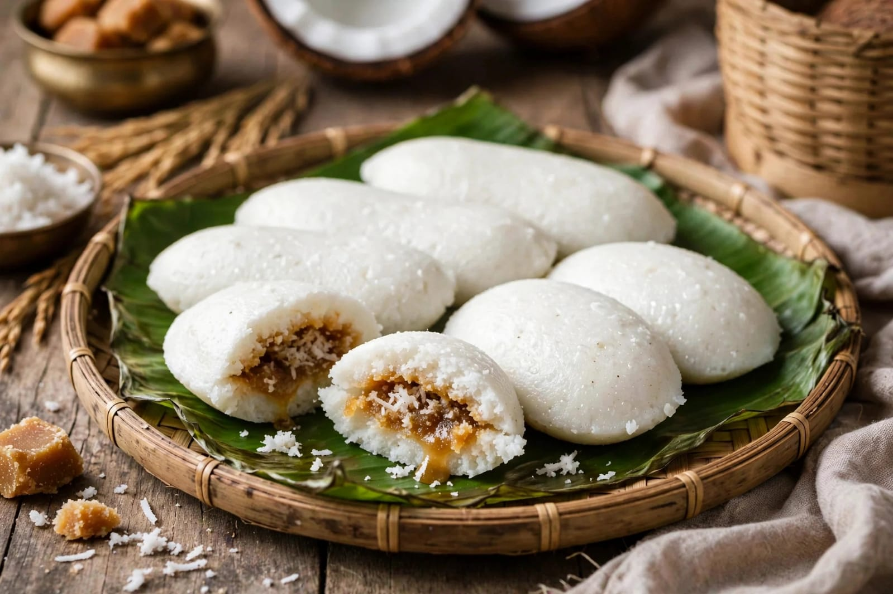
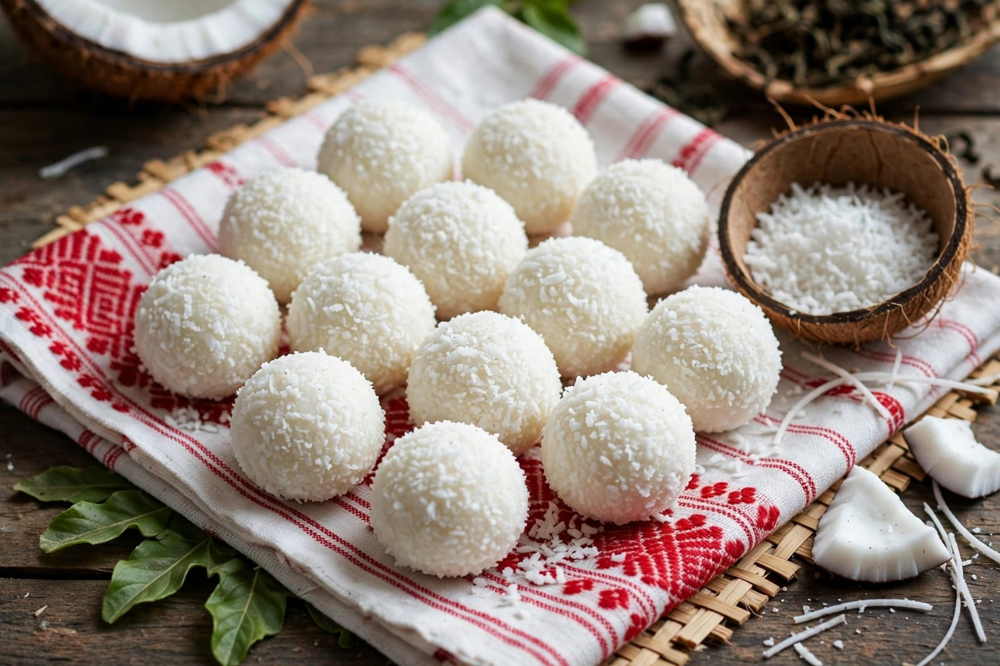
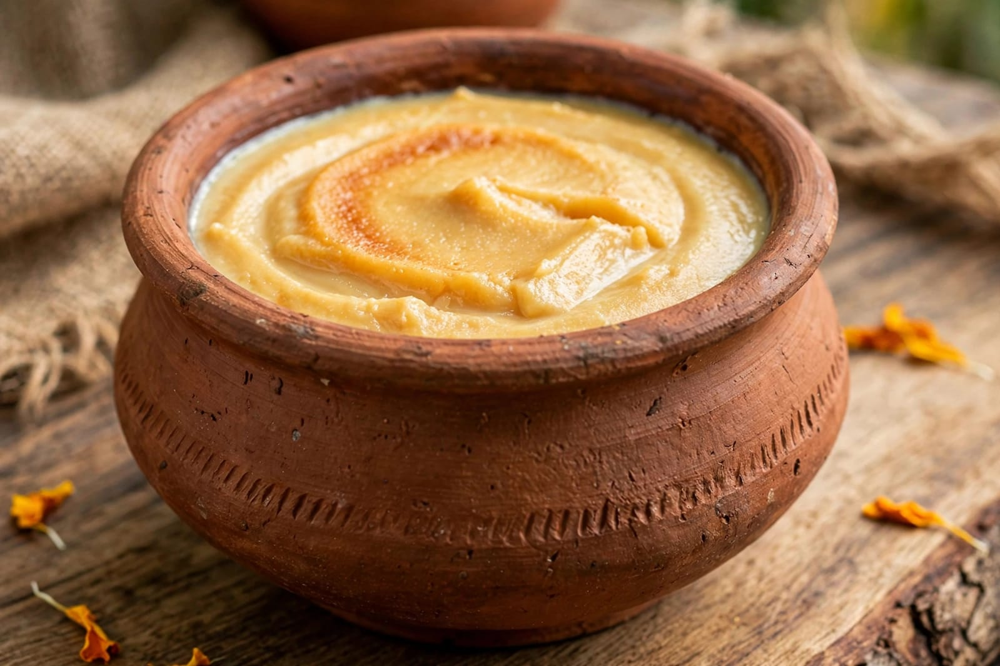

About Bihu
Bihu is one of the most important festivals of Assam. It is closely connected with the agricultural life of the people of Assam. Bihu is celebrated with great joy and enthusiasm. It represents the rich culture and traditions of Assam. There are three main Bihu festivals. They are Rongali Bihu, Kongali Bihu and Bhogali Bihu. Each Bihu has its own importance and traditions. Rongali Bihu is also known as Bohag Bihu. It marks the beginning of the Assamese New Year. Rongali Bihu is celebrated during the spring season. It is also associated with the agricultural activities of Assam. People clean and decorate their homes before the festival. New clothes are worn during the celebrations. Families prepare traditional Assamese food. People visit relatives, friends and neighbours. Traditional songs and dances are an important part of Bihu. Bihu dance is one of the most famous traditional dances of Assam. Young people perform Bihu dance during celebrations. Traditional musical instruments are also played. The dhol and pepa are commonly associated with Bihu celebrations. People sing traditional Bihu songs. The festival creates a joyful atmosphere throughout Assam. Rongali Bihu is a celebration of youth, nature and new beginnings. Farmers pray for a good agricultural season. Cattle are also given special care during some Bihu traditions. People express respect for animals and nature. Bihu brings families and communities together. The festival promotes friendship and social harmony. People exchange greetings and traditional foods. Bihu is an important part of Assamese identity. It reflects the traditions and lifestyle of the people of Assam. The festival is celebrated in many villages and towns. Cultural programs are organized in different places. Bihu celebrations may continue for several days. People enjoy music, dance and traditional activities. Bihu is a colourful and joyful festival of Assam.
Rongali Bihu is usually celebrated in April. It marks the beginning of the Assamese New Year. The festival is connected with the arrival of spring. Nature becomes green and colourful during this season. People celebrate the new agricultural year with happiness. Traditional Bihu songs are performed in many places. Bihu dance is performed by groups of young people. The dance is known for its energetic movements. Traditional Assamese clothes are commonly worn. Women may wear traditional Mekhela Chador. Men may wear traditional dhoti and gamocha. The gamocha is an important cultural symbol of Assam. People exchange gamocha as a traditional gesture of respect. Homes are cleaned and decorated before the festival. Special food is prepared for family members and guests. Pitha is an important traditional food during Bihu. Laru is also prepared during the festival. Various rice-based dishes are enjoyed. Families sit together and share meals. People visit relatives and friends. Traditional games and cultural activities are organized. Many communities arrange public Bihu celebrations. Music competitions and dance programs may be held. Bihu celebrations are also organized in schools and colleges. The festival helps younger generations learn Assamese traditions. It keeps traditional music and dance alive. Bihu also reflects the close relationship between people and nature. Agriculture has an important place in Assamese culture. The festival expresses hope for prosperity and a good harvest. People pray for happiness and success. Bihu creates a strong feeling of community. It brings people together regardless of age. Bihu is celebrated with happiness and cultural pride. It is an important festival of Assam.
Bhogali Bihu is also known as Magh Bihu. It is associated with the harvest season. Bhogali Bihu is celebrated with traditional feasts. Community meals are an important part of the festival. People prepare different traditional Assamese dishes. Bonfires called Meji are associated with Magh Bihu. People gather around the Meji during the celebration. Traditional prayers and activities are performed. Uruka is the night before Magh Bihu. Families and communities prepare special food during Uruka. Kongali Bihu is also called Kati Bihu. It is observed during a period associated with crop growth. People light lamps in their homes and fields. The lamps are connected with prayers for a good harvest. The three Bihus have different meanings and traditions. Together they represent different stages of the agricultural cycle. Bihu is not only a festival but also a celebration of Assamese culture. Traditional food is an important part of all Bihu celebrations. Pitha and laru are popular festive foods. Rice is an important ingredient in many Assamese dishes. Families prepare food using traditional recipes. People share food with relatives and neighbours. Bihu promotes friendship and togetherness. It helps preserve the cultural heritage of Assam. The festival is enjoyed by people of different age groups. Bihu celebrations are held in many parts of Assam. Assamese communities outside Assam also celebrate Bihu. The festival represents happiness, nature and agricultural life. Bihu is an important cultural festival of India. It showcases the rich traditions of Assam. The celebration creates a feeling of unity and joy.
Special Foods

Pitha
Pitha is a traditional Assamese food commonly prepared during Bihu.

Laru
Laru is a traditional Assamese sweet prepared during festivals.

Doi
Doi is a traditional curd enjoyed with different festive foods.